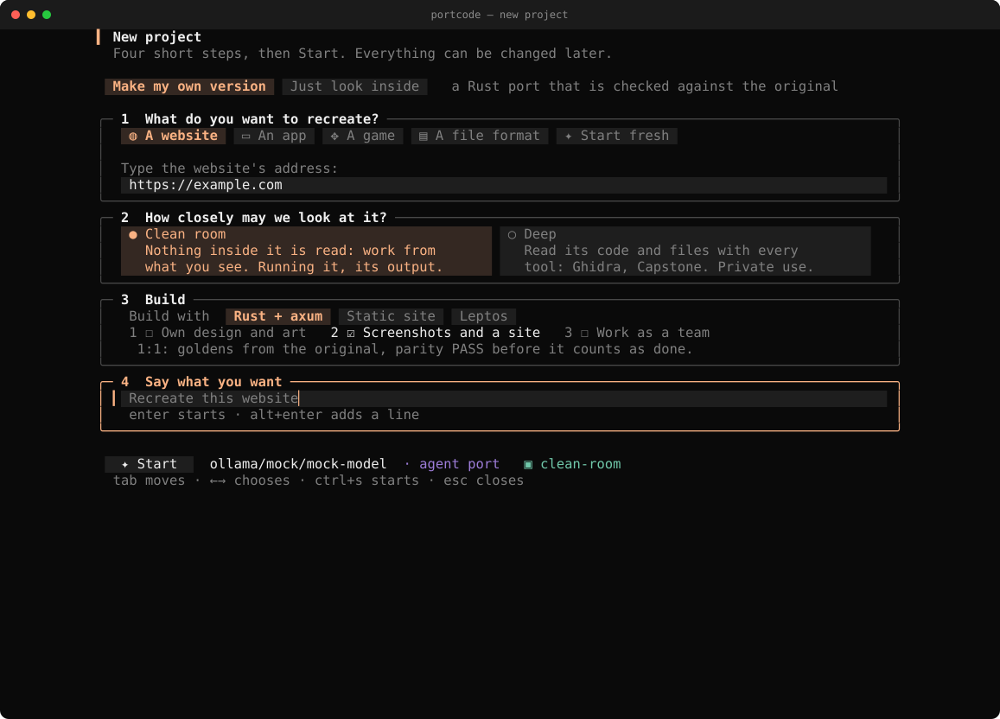
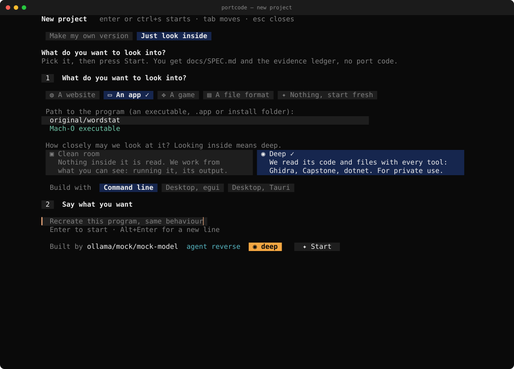
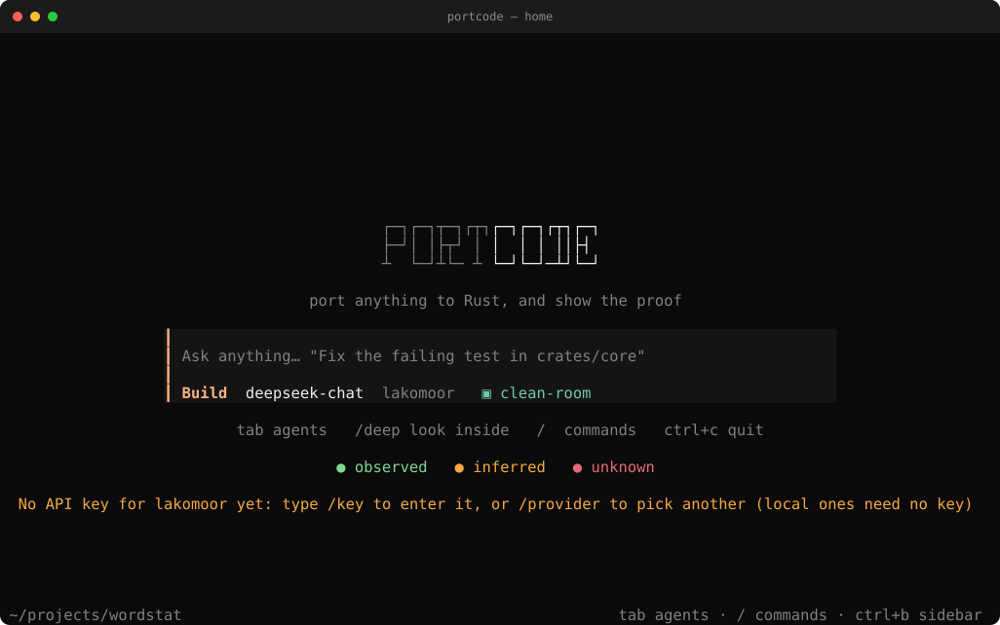
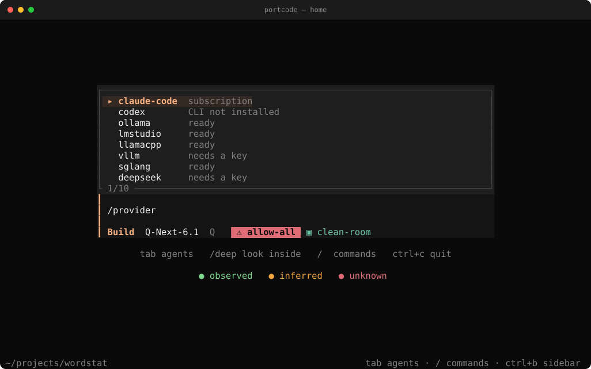
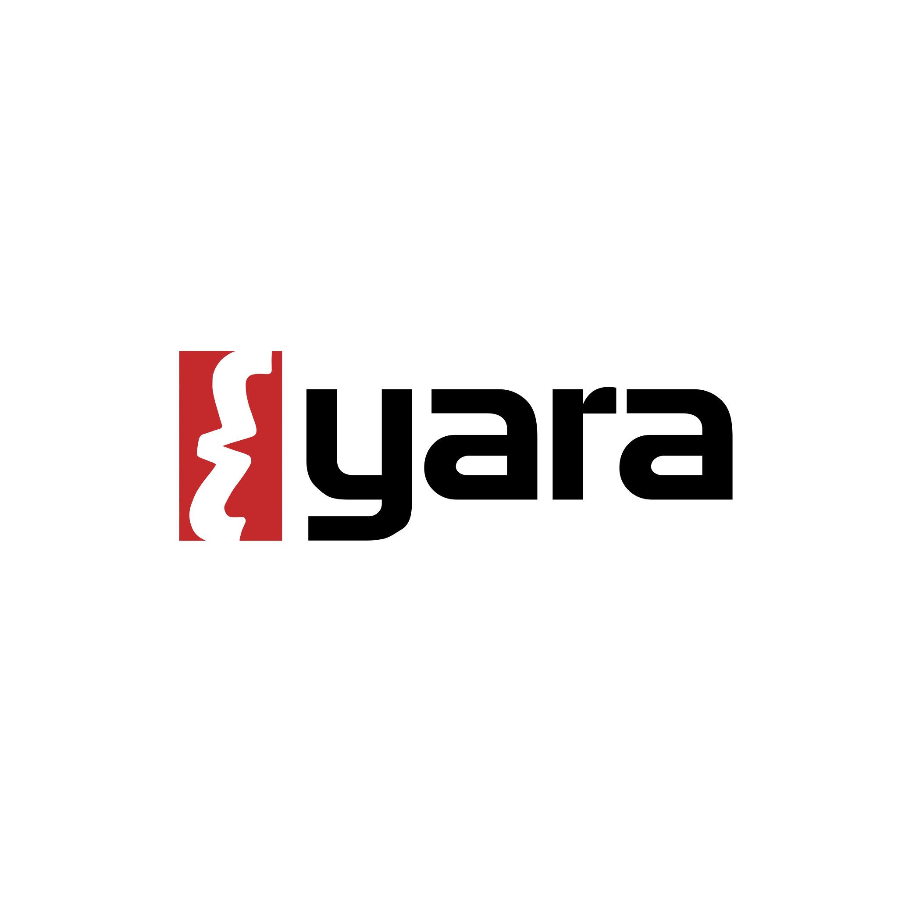
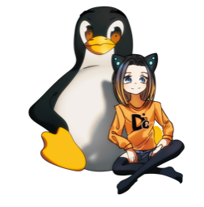
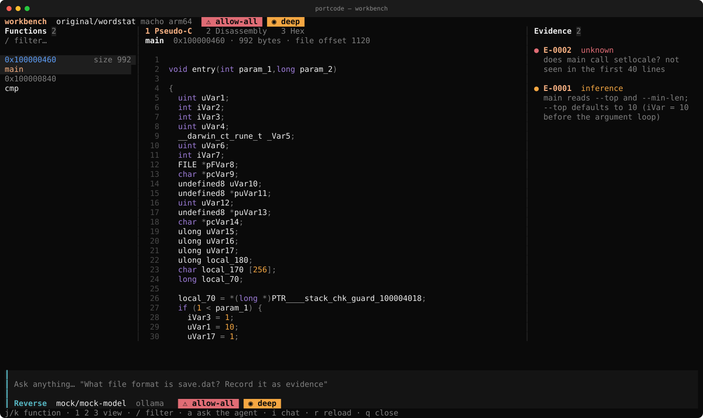

Port a program to Rust and check it behaves the same.
PortCode is a terminal agent. It studies the original, writes down what it finds out, rewrites the program in Rust piece by piece, and compares each piece with the original's real output. It works with models you run yourself: lakomoor.com/v1, Ollama, LM Studio, llama.cpp, vLLM.
Install in one line$ curl -fsSL https://raw.githubusercontent.com/LakoMoor/portcode/main/install.sh | sh
Then open any folder$ portcode
macOS, Linux and WSL. The installer checks the sha256 of what it downloads. Also runs on your Claude Code or Codex subscription, no API key.
Clean-roomDeep
−150 steps+
✓Pin the build
✓Golden cases
✓Parity PASS
Screenshots
⌕ E-0007
Run parity
context
lakomoor/deepseek-chat⌄
● connected · full control
Port wordstat to Rust
✓pinE-0001
✓surveyE-0002
bash asks to run
cargo test --workspaceAllowDeny
agenttab
stopesc
menu/
allowy
denyn
send⏎
6/6
The controls and the remote page are copies of the real interface. The numbers come from the wordstat example in the repo. In the screenshots the model is a scripted replay, so anyone can reproduce them.

The terminal interface
The port agent working on wordstat: tool calls, evidence and a to-do list on the right. Made with make_screenshots.sh.
Start with /create
Type /create and answer a few questions: what to recreate (a website, a program, a game, a file format, or nothing yet), how closely PortCode may look at it, what to build with, and what you want. It starts the right agent in the right mode. Pick "Just look inside" if you only want to understand it: you get docs/SPEC.md and the evidence ledger, no port code.


First run
Three steps, all inside the app. Type /setup any time to see them again.
1. Pick a provider
Local model, no key: /provider ollama qwen3:14b. Type /provider alone to see all of them and which need a key.
2. Paste your key
/key asks for it. It is hidden while you type and saved with mode 600. Or run portcode auth set <provider> in a shell.
3. Check and start
portcode doctor tests the setup. Then /create, or just type a task. Full guide.


Updates: portcode update or /update compares your version with the latest release. Once a day the app checks quietly. PORTCODE_NO_UPDATE_CHECK=1 turns it off. Nothing installs by itself.
Use your Claude or ChatGPT plan
No API key needed. PortCode starts the official claude or codex program on your machine and lets it use the login you already have. It adds its own tools: the evidence ledger, pinning, parity checks and screenshots.
PortCode on your plan
portcode -m claude-code/sonnet or portcode -m codex/default. The work shows up in the PortCode screen and the evidence goes into the same ledger.
Your CLI uses PortCode
claude mcp add portcode -- portcode mcp gives Claude Code (and Codex with codex mcp add) PortCode's tools in the session you already use. Details and limits.
Watch a real run
This is the wordstat port. The tool calls and their output were recorded from a real run, and the model's replies are scripted so it is repeatable. Nothing here is typed by hand.
Evidence
0
To do
Try /create
Install
# macOS / Linux / WSL
curl -fsSL https://raw.githubusercontent.com/LakoMoor/portcode/main/install.sh | sh
# options: PORTCODE_VERSION=v0.1.0 · PORTCODE_INSTALL_DIR=~/bin · PORTCODE_FROM_SOURCE=1 · --with-engines core · --with-skill ~/.claude/skills · --uninstall
cargo install --git https://github.com/LakoMoor/portcode portcode-cli
portcode init && portcode doctor && portcodeLinux and macOS, x86_64 and aarch64. The installer checks the sha256 and builds from source if there is no binary for your system. On Windows use WSL.


Clean room or deep
In clean-room mode PortCode only watches the original from outside: it runs it and compares the output. It will not use disassemblers, decompilers or hex viewers. In deep mode it uses Capstone, Unicorn, Ghidra and ImHex, which are installed next to the binary, each one only after you say yes.
Capstone shows the first instructions: the function reserves 416 bytes of stack.
100000460sub sp, sp, #0x1a0
100000464stp x28, x27, [sp, #0x140]
100000468stp x26, x25, [sp, #0x150]
10000046cstp x24, x23, [sp, #0x160]
100000470stp x22, x21, [sp, #0x170]
100000474stp x20, x19, [sp, #0x180]
10000047cadd x29, sp, #0x190
100000480adrp x8, #0x100004000
100000484ldr x8, [x8, #0x18]
Unicorn runs it.
sp before
0x800ef000
sp after
0x800eee60
8 instructions · frame 0x1a0 bytes
PortCode works with
21
tools. Each one is installed only after you say yes.
ImHex describes a file format. The agent writes the pattern, you check it in ImHex.
0000cffaedfe0c000001
00080000000002000000
00101100000020040000
00188500200000000000
u32 magic0xFEEDFACF
u32 cputypeARM64
u32 cpusubtype0
u32 filetypeEXECUTE
u32 ncmds17
u32 sizeofcmds1056
u32 flags0x200085
Around them rizin, radare2, YARA, Frida, LIEF, capa and Detect It Easy, plus ILSpy, Il2CppDumper, dnfile and UnityPy for Unity and C#.


angrKeystonebinwalkjadxwabtupx
Nothing looks inside unless you turn it on.
Clean room is the default. Switch to deep in the terminal or on the remote page.
clean-room deep
The numbers on these cards come from running the tools on the wordstat binary from the repo.

Workbench
Type /workbench in deep mode. Functions on the left; pseudo-C, disassembly or hex in the middle; the evidence ledger on the right; the agent at the bottom. a makes the agent explain the function and record what it finds.

Two sessions, kept apart
The first session looks inside and writes docs/SPEC.md, the second builds the port from that spec alone, in clean-room mode.
portcode engines install core
portcode --deep -a reverse
portcode --clean-room -a portFacts first, then code
Study
Fix the exact build, look through the files, follow the main loop. What you only read is an inference; only what you ran counts as an observation.
Record
A log you can only add to. Each entry has an id (E-0007), a source and a hash, and open questions are marked unknown. Every rule in the port points to an entry.
Port
One small piece at a time, checked against output captured from the original, not against your reading of its code.
Prove
parity and fuzzing against the original decide whether the port matches. The agent will not stop before a PASS.
Works with local and self-hosted models
One OpenAI-compatible client that copes with what open models get wrong: reasoning_content and inline <think>, tool calls written as plain text, broken or cut-off JSON arguments, numbers in quotes, servers that reject optional fields, streams that stall. Small context windows and replies cut off by the output limit are handled too.
| Provider | Default endpoint | Key |
|---|---|---|
lakomoor | https://lakomoor.com/v1 | LAKOMOOR_API_KEY |
ollama | http://localhost:11434/v1 | none |
lmstudio | http://localhost:1234/v1 | none |
llamacpp · vllm · sglang | :8080 · :8000 · :30000 | optional |
deepseek · openrouter | hosted, same protocol | env var |
What is tested. The client, the JSON repair and the agent loop are tested end to end against a scripted server. The DeepSeek and Qwen profiles are cautious guesses, not benchmark results. Run
portcode eval on your model and adjust.$ portcode models -p lakomoor
$ portcode -m lakomoor/deepseek-chat
$ portcode -m ollama/qwen3:14b -a portSix agents
build
Default. Makes changes from start to finish.
port
The rustport workflow, the porting tools and the finish check.
reverse
Studies the original and records evidence. Does not edit code. Uses the deep tools.
plan
Read-only: investigates and writes a plan.
explore · general
Sub-agents with a clean context, started through task.
Edits and commands ask first (allow, always, deny). Dangerous commands are always refused and file tools stay inside the project. The shell runs with stdin closed, a time limit and capped output, and the whole process group is killed on timeout.
The rustport skill
It is built into the binary and also works in Claude Code, Codex and OpenCode (portcode skill export ~/.claude/skills). The main file is about 100 lines and loads the detailed notes only when a phase needs them.
- Intake fidelity, platforms, clean-room or deep, licence →
docs/PORT.md - Pin + survey exact build hash, inventory, unknowns recorded
- Plan module map leaves-first; rewrite, bind or drop per module
- Golden harness deterministic scenarios captured from the original
- Port core slice → test → clippy → parity; bisect, never widen tolerance
- Platform / rendering only for a GUI; wgpu behind traits, offscreen PNG compare
- Prove it screenshots per feature, perf,
site_build
An example port


wordstat, C → Rust
A real C program, 6 golden cases, 400 fuzz runs against the original, 11 evidence records and one open question.
parity 6/6fuzz 400/4001 unknown
Open the generated siteThe ledger, in the terminal
portcode port ledger lists what is observed, inferred and unknown for that port.
Everything is a tool
The terminal UI, the agent and scripts call the same tools. Anything the model can do, you can run by hand with portcode tool <name> '{json}'.

| Command | What it does |
|---|---|
portcode | Interactive chat |
portcode run "…" -a port -y --json | One-shot, JSON lines |
portcode doctor · eval | Check setup · probe a model |
portcode port … | The porting workbench, no LLM |
portcode serve | Remote control, see remote |
portcode skill export <dir> | Install the skill elsewhere |
Where this comes from
PortCode follows the architecture of OpenCode, rewritten in Rust, and combines it with the rustport skill and ideas from Craft Anything. It is a rewrite, not a fork. The mapping lists what is covered.